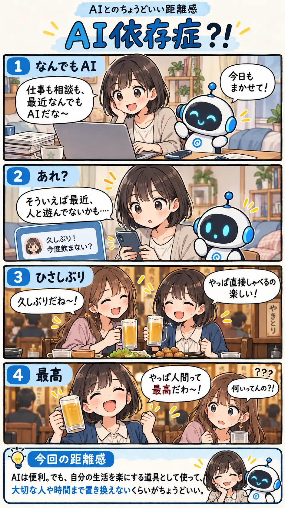

#157
AI依存症？！
便利すぎて、人と会う時間まで減ってた？

メモ
AIはいつでも返事をしてくれて、仕事も相談も手伝ってくれます。便利だから使っているだけなのに、気付けば一人で完結する時間が増えていることもあるかもしれません。
AIを遠ざける必要はないけれど、家族や友人と笑ったり、直接話したりする時間はまた別物。便利な道具は便利に使いつつ、大切な時間まで置き換えないようにしたいですね（笑）
今回の距離感
AIは便利。でも、自分の生活を楽にする道具として使って、大切な人や時間まで置き換えないくらいがちょうどいい。